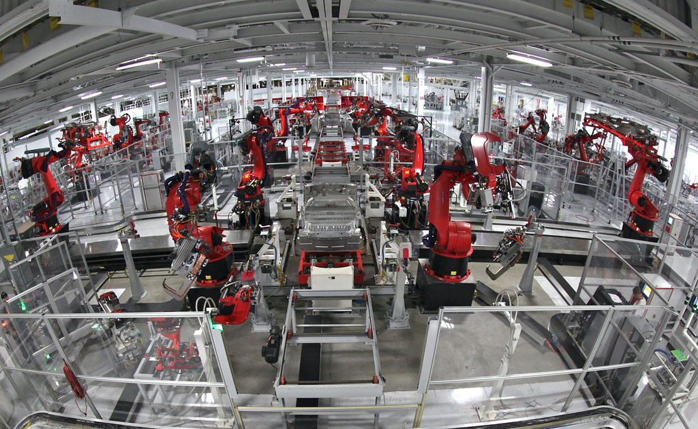

Documento técnico · Indústria 4.0
Sensores e robôs da Internet das Coisas.
01 — O que é
Internet das Coisas (IoT)
A Internet das Coisas é a rede de objetos físicos — máquinas, sensores e dispositivos — capazes de coletar dados do ambiente, trocar informações entre si e agir sobre processos, sem depender o tempo todo de um operador humano.
No chão de fábrica, isso significa equipamentos que medem temperatura, pressão, posição ou consumo de energia e enviam esses valores por rede para sistemas de controle. A partir desses dados é possível monitorar, prever falhas e automatizar decisões em tempo real. Sensores fazem a leitura; robôs e atuadores executam a ação.

02 — Por que importa
A importância da automação industrial
Produtividade e repetibilidade
Máquinas automatizadas operam de forma contínua e com precisão constante, reduzindo variações que a operação manual introduz.
Segurança
Robôs assumem tarefas perigosas — solda, cargas pesadas, ambientes tóxicos — afastando o trabalhador do risco.
Dados para decisão
O sensoriamento gera um fluxo de dados que alimenta manutenção preditiva, controle de qualidade e otimização de processos.
03 — A ligação
Robótica, sensoriamento e IoT
Sensores e robôs não trabalham isolados. O sensor lê uma grandeza física e a converte em sinal elétrico; a rede transporta esse sinal; o controlador decide; o robô atua. Quando esse ciclo é conectado à Internet das Coisas — usando protocolos como MQTT, OPC UA, Profinet ou Ethernet Industrial — a fábrica inteira passa a ser observável e ajustável remotamente. Este catálogo separa esse universo em duas frentes:
Sensores IoT
Temperatura, distância, gás, corrente, presença e mais. Conceito, princípio de funcionamento, tipo de sinal e integração com Arduino / ESP32.
Abrir catálogo de sensores → Frente 02Robôs Industriais
Cartesiano, SCARA, articulado, cilíndrico, delta, polar e colaborativo. Funcionamento, aplicações, integração IoT e fabricantes.
Abrir catálogo de robôs →